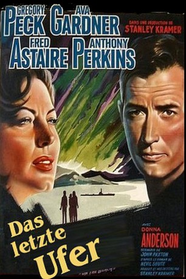
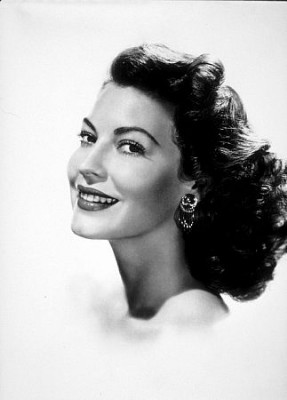

#6674 Das Letzte Ufer
Alternativ: On the Beach
Auszeichnungen: für 2 Oscars nominiert 1 GoldenGlobes gewonnen 1 BAFTA-Awards gewonnen
 
 IMDB-Wertung: 7.3 / 10
IMDB-Wertung: 7.3 / 10  Metascore: 0
Metascore: 0 
Der Krieg ist aus, niemand hat gesiegt. Nur die Einwohner Australiens und die Besatzung des amerikanischen U-Boots “Sawfish sind der atomaren Zerstörung und der Verstrahlung der Erde bisher entronnen. Doch die radioaktive Wolke rückt näher, und Captain Dwight Towers) bricht mit der “Sawfish” auf, um sie zu erkunden. Doch seine Nachrichten sind niederschmetternd: Die Strahlenwolke ist absolut tödlich. Und während die Zeit verrinnt, versucht jeder auf seine Weise mit dem nahen Ende fertig zu werden. Der eine will noch rasch seinen Lebenstraum als Rennfahrer verwirklichen, die andere versucht, der Liebe noch einmal eine Chance zu geben. Das letzte Kapitel der Menschheitsgeschichte ist angebrochen.
Jahr: 1959
Dauer: 126 Minuten
FSK: 16
Land: USA Studio: United ArtistsTonspuren: DD2.0 - ,
Untertitel:
Auflösung: 1080p (1920x1080) Größe: 10956 MB
Genre: Drama, Sci-Fi, Liebe
Regisseur:  Stanley Kramer
Stanley Kramer
Drehbuch: John Paxton
Soundtrack:
Darsteller:
 Gregory Peck als Cmdr. Dwight Lionel Towers
Gregory Peck als Cmdr. Dwight Lionel Towers-  Ava Gardner als Moira Davidson
 Fred Astaire als Julian Osborne
Fred Astaire als Julian Osborne- Anthony Perkins als Lt. Peter Holmes
- Donna Anderson als Mary Holmes
- Harp McGuire als Lt. Sunderstrom
- Ken Wayne als Lt. Benson
 Guy Doleman als Lt. Cmdr. Farrel
Guy Doleman als Lt. Cmdr. Farrel- John Meillon als Ralph Swain
- Paddy Moran als Stevens
- Jack Boyer als Bit Part , uncredited
- Graham Kennedy als Bit Part , uncredited
- John Tate als Adm. Bridie
- Lola Brooks als Lt. Hosgood
- Richard Meikle als Davis
- Joe McCormick als Ackerman
- Lou Vernon als Bill Davidson
- Kevin Brennan als Dr. King
- Basil Buller-Murphy als Sir Douglas Froude
- John Casson als Salvation Army captain
- Grant Taylor als Morgan
- Harvey Adams als Sykes , uncredited
- Peter Ashton als Bit Part , uncredited
- Jim Barrett als Chrysler , uncredited
- Ken Baumgartner als Bit Part , uncredited
- C. Harding Brown als Dykers , uncredited
- Norman Cook als Bit Part , uncredited
- Colin Crane als Bit Part , uncredited
- Gerry Duggan als Bit Part , uncredited
- Keith Eden als Dr. Fletcher , uncredited
- Lucian Endicott als Bit Part , uncredited
- Stuart Finch als Jones , uncredited
- Paddy Fitzallen als Bit Part , uncredited
- Ronald Fortt als Bit Part , uncredited
- Cyril Gardner als Bit Part , uncredited
- Frank Gatliff als Radio Officer , uncredited
- Katherine Hill als Jennifer Holmes , uncredited
- Collins Hilton als Bit Part , uncredited
- Brian James als Bit Part , uncredited
- Joseph Jenkins als Bit Part , uncredited
- Delos Jewkes als Solo for Waltzing Matilda , uncredited
- Audine Leith als Betty , uncredited
- Paul Maloney als Bit Part , uncredited
- Ray Marshall als Bit Part , uncredited
- John Morgan als Bit Part , uncredited
- Peter O'Shaughnessy als Jorgensen Associate , uncredited
- Rita Pauncefort als Party Guest , uncredited
- Carey Paul Peck als Boy , uncredited
- Elwyn Peers als Bit Part , uncredited
- John Royle als Senior Officer , uncredited
Datei: X:\1950-1959\Letzte Ufer, Das (1959, FSK16, 1920x1080).mkv seit 02.08.2017
Festplatte: HD 1900-1970
 Es gibt insgesamt 141 Filme in der Gruppe '1950-1959'
Es gibt insgesamt 141 Filme in der Gruppe '1950-1959'